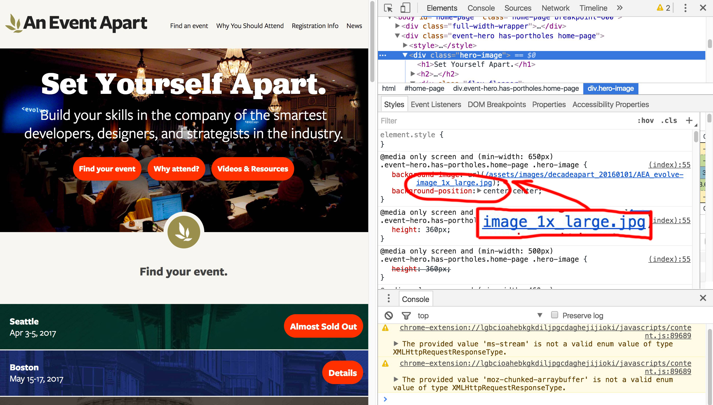
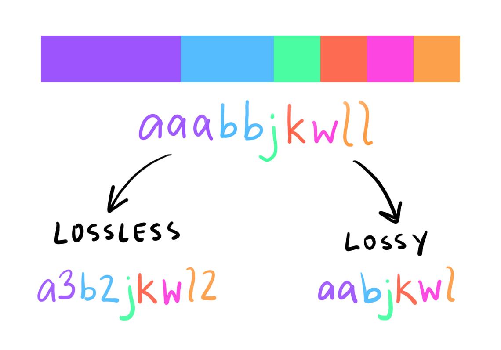
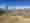
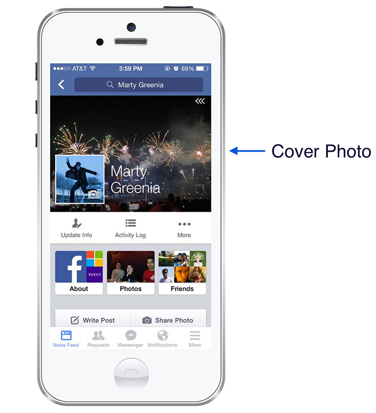
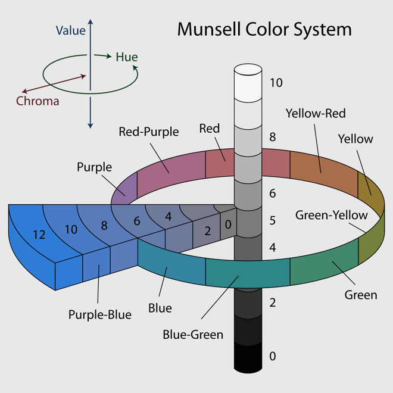

Beyond the Basics of Image Optimization
Martin Splitt & Una Kravets
Image Best Practices
A *very* quick reminder of good image optimization practices
Good ol' formats
| Format | PNG | JPEG | GIF |
| Size | 848K | 98K | 270K |
| Transparency? | ✅ | ❌ | ✅* |
| Encoding | Lossless | Lossy | Lossless* |
The new ones
| Format | PNG | JPG | WebP | HEIF |
| Size | 1300K | 829K | 129K | 248K |
| Encoding | Lossless | Lossy | Either | Lossy |
| Transparency | ✅ | ❌ | ✅ | ✅ |
| Optimized for | Quality | Size | Size | Quality |
JPG
HEIF
<picture> + srcset
<picture>
<source media="(max-width: 799px)" srcset="dog-300w.jpg">
<source media="(min-width: 800px)" srcset="dog-800w.jpg">
<img src="dog-800w.jpg" alt="A very cute dog">
</picture>
srcset + sizes
<img
srcset="dog-320w.jpg 320w,
dog-480w.jpg 480w,
dog-800w.jpg 800w"
sizes="(max-width: 320px) 280px,
(max-width: 480px) 440px, 800px"
src="dog-800w.jpg" alt="A very cute dog">
Media Queries

Optimizers
MozJPEG
mozjpeg -outfile minified.jpg original.png
optipng
optipng -out minified.png original.png
img-loader for Webpack
Combines the previous tools in a Webpack Loader
npm install img-loader
Pixel Rendering 101
How the Browser Makes Images
Lifecycle of an image
- Downloading image
- Reading header (setup)
- Decoding image
- VRAM upload
- Composite
- ✨Display✨
PNG Header
89 50 4E 47 0D 0A 1A 0A .. ..
PNG Header
89 50 4E 47 0D 0A 1A 0A .. ..
Decoding
Composite
Layer 1: 255 000 128
Layer 2: 000 255 128
Output: ??? ??? ???
Composite
Layer 1: 255 000 128
Layer 2: 000 255 128
Output: 255 255 128
Composite?
Compositing is running shaders with all layers as input
function shader(x, y, layer1, layer2, ...) {
return [red, green, blue];
}Shader playground
Beyond the Basics
Designing for Performance
Spot the Difference!
409 KB
264 KB
409 KB

0.533 KB
0.533 KB
Facebook Headers: 200 bytes
 Source"Blur Up"
Histogram Scope Reduction
279 kb
217 kb
291 kb
229 kb
922 kb
733 kb
Black & White Doesn't Have to Be Boring!
CSS Blend Modes
- Darken
- Multiply
- Color Burn
- Lighten
- Screen
- Color Dodge
- Overlay
- Soft Light
- Hard Light
- Difference
- Exclusion
- Hue
- Saturation
- Color
- Luminosity
A * B
How does that work?

una.im/CSSgram
How does that work?
CSS Filters
See the Pen Cross-browser filter effects by Amelia Bellamy-Royds (@AmeliaBR) on CodePen.
❌ Fill ❌
How does that work?
DIY Image Optimizing with CSS Filters

Contrast trick
- Improve compression
- Correction via shader multiply

Vs.
Blend Modes
3.6 MB
Gif
24.7 MB
mp4: 3.5 MB
webm: 1.3 MB
<video>
<source src="src/video.mp4"
type='video.mp4;
codecs="avc1.42E01E, mp4a.40.2"'/>
<source src="src/video.webm"
type='video.webm;
codecs="vp8, vorbis"'/>
</video>
Wrap Up
Image processing pipeline
Optimisations
Can we use it?


We can haz blend-mode, please?